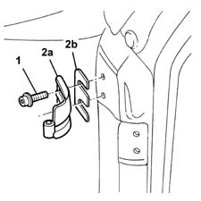

7005A24 front side door r r
- Path
- Procedures > 70 FITTINGS > 7005 PASSENGER COMPARTMENT FRONT SIDE DOORS > 7005A front side door assembly > 7005A24 front side door r r
- Kind
- repair procedure (removal / refitting; the operation number is the code)
- Applies to
- all engines; all production periods
- Interactive page
- https://sloeber94.github.io/elrnDB-lYpsln/en/#/2429479
Applies to: all engines; all production periods
 Removing
Removing
 Refitting
Refitting1. Unscrew the hinge retaining bolts.
2. Remove the hinge (2a) and collect any shims (2b).

Applies to: all engines; all production periods
Refitting
RemovingRefit the hinge.
Screw in the bolts without tightening.